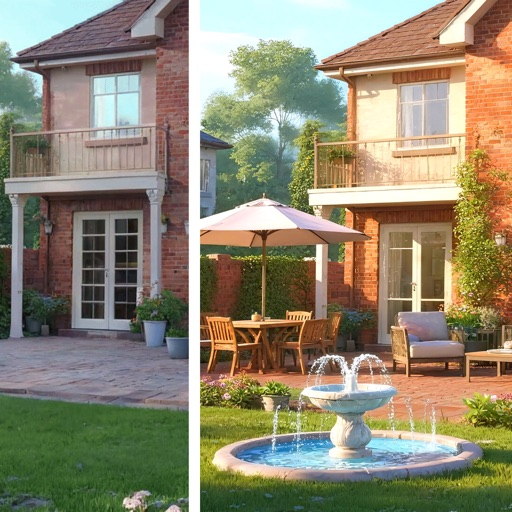
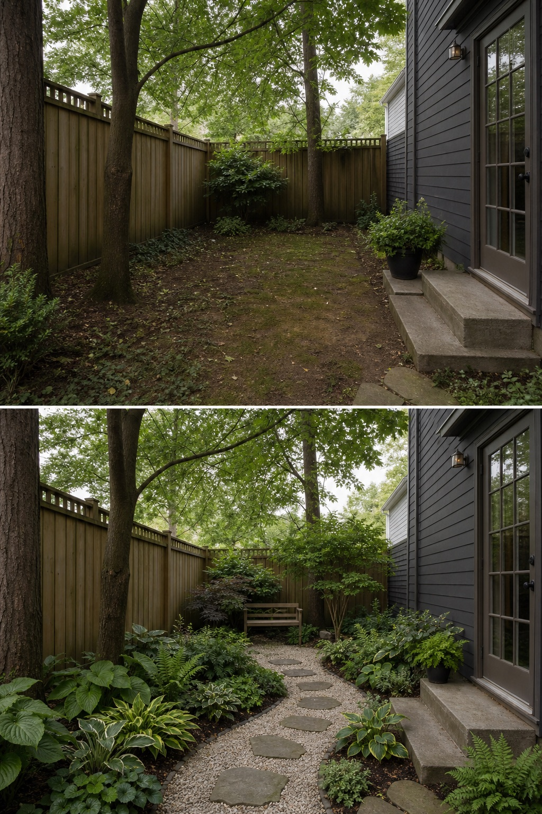

Map shade at more than one time
Mark where the garden receives morning light, broken light, deep shade, and seasonal sun. A single midday photo can hide the difference between workable planting space and a persistently dark corner.

Garden AILandscape ideas, visualizedTry your gardenA small shade garden works best when the layout is decided before the plant list. Start with changing light, drainage, access, and one useful destination; then use foliage and material contrast to make the space feel intentional.
Editorially reviewed July 16, 2026.
The comparison below is an AI-generated design concept, not a planting, drainage, or construction plan.

Mark where the garden receives morning light, broken light, deep shade, and seasonal sun. A single midday photo can hide the difference between workable planting space and a persistently dark corner.
Connect the door, gate, tap, drain, storage, and seating without forcing people through beds. In a shady yard, drainage and slip resistance matter as much as the shape of the path.
Place the main seat or focal pause where it is comfortable and easy to reach. Build depth with a restrained mix of broad leaves, fine foliage, vertical forms, and pale or reflective surfaces.
The visual direction can help you compare path width, seating position, foliage density, and material contrast. It cannot identify soil moisture, root competition, underground services, mature plant size, local climate, toxicity, invasive-species rules, or structural requirements. Verify those facts before buying or building.
Observe the space morning, midday, and afternoon, then note wet areas, dry soil under trees, roof runoff, and seasonal changes.
Keep doors, gates, drains, utilities, bins, taps, and maintenance routes reachable at the mature size of the planting.
Check drainage, algae risk, slip resistance, glare, cleaning, and local installation needs before selecting pale stone, gravel, pavers, or decking.
Confirm climate, soil, water, mature spread, pet or child safety, invasive status, and maintenance with a qualified local source.
Measure the space and map light, drainage, access, utilities, root competition, and the garden's main use. Once those constraints are visible, choose locally suitable plants for each specific zone instead of treating the entire yard as one kind of shade.
It can be lower maintenance when plants suit the site, beds are reachable, paths drain well, and the palette is repeated. “Low maintenance” is not universal: leaf fall, moisture, pruning, watering, and surface cleaning still depend on the location.
Use a level, wide view that includes the main boundaries, doors, and fixed elements. Photograph in even daylight, remove temporary clutter, and keep the original image so each concept can be compared from the same angle.
Upload a photo to compare layout directions before choosing plants or materials.
AI-generated visualizations are concepts. Check local conditions and consult a qualified professional before construction or planting.